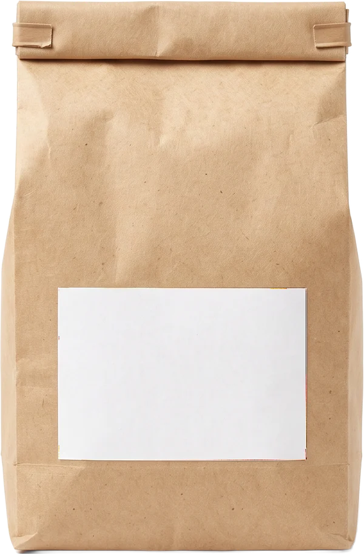
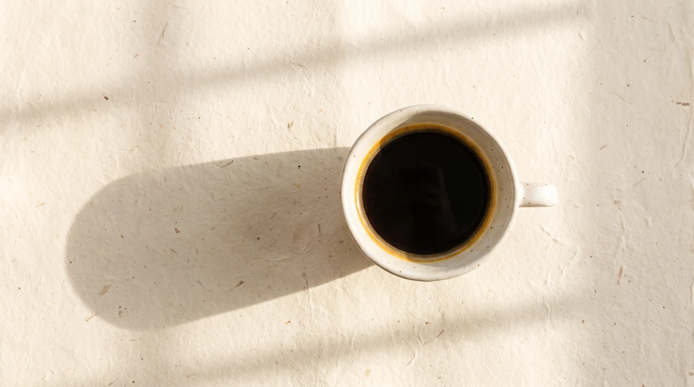
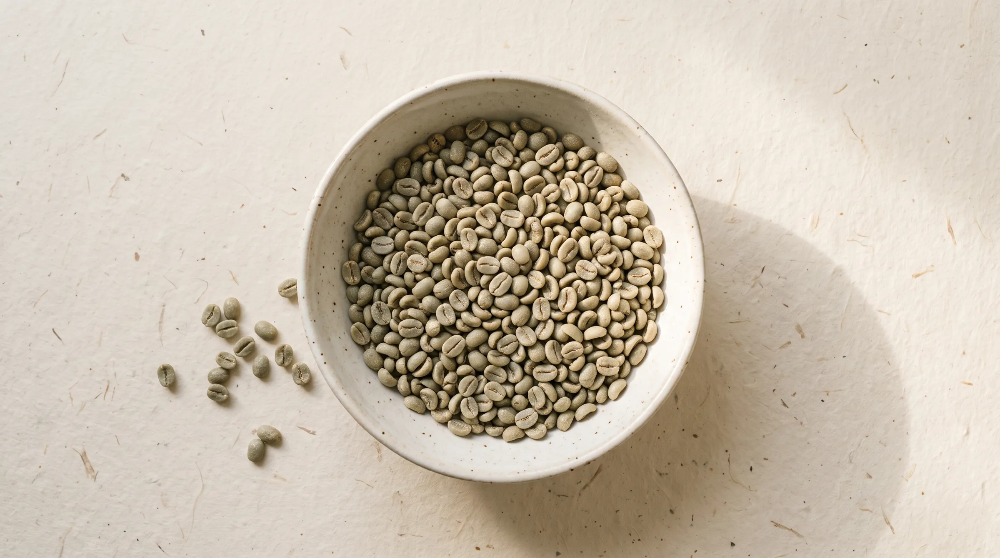
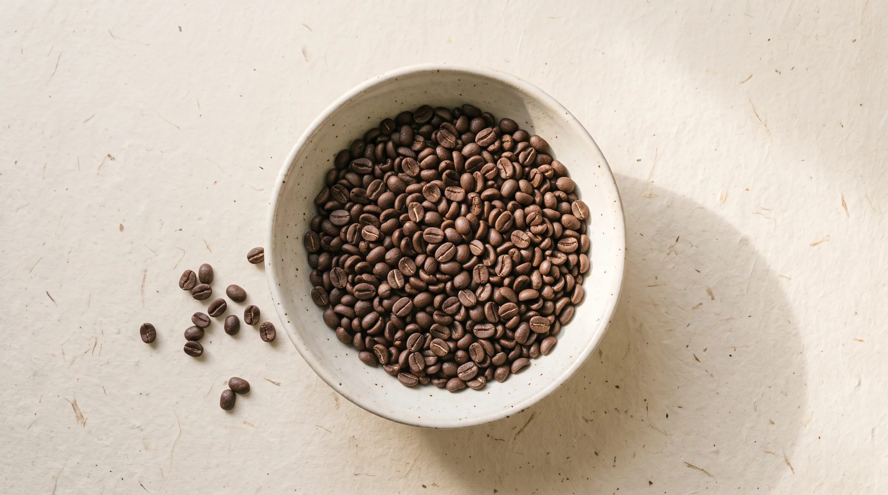
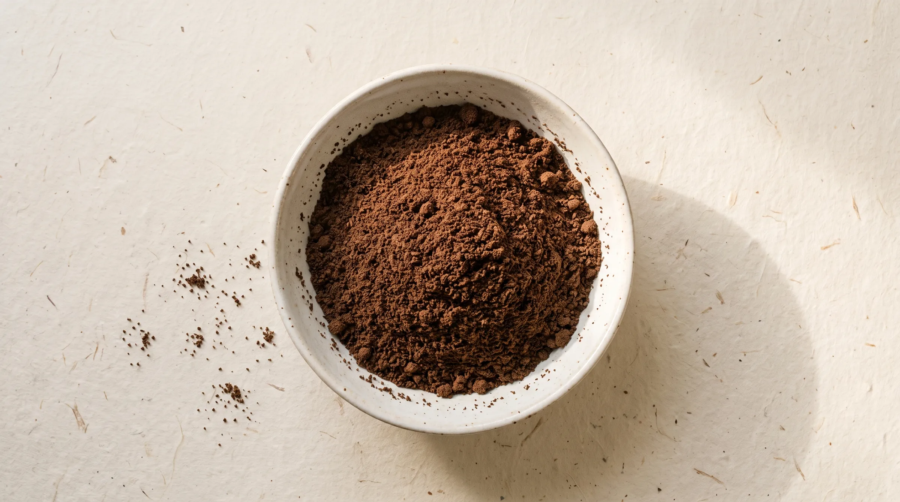
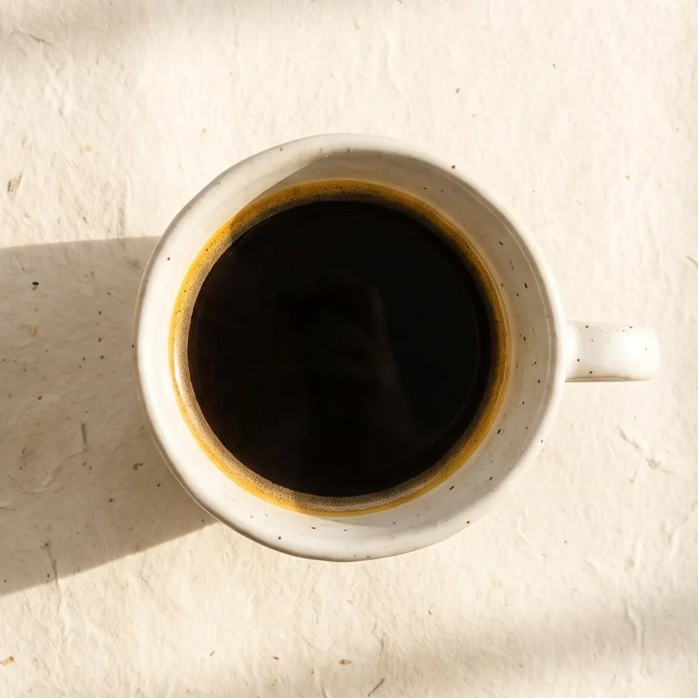

Zrno a žárEtiopieGuji · 250 g
Etiopie Guji
borůvka · jasmín · černý čaj

Malá pražírna · pražíme každé úterý
Pražíme v malých várkách a posíláme nejpozději dva dny po pražení. Zrno, o kterém víme, odkud je.
Jak pražíme
Každé zrno
projde ohněm
jen jednou.
Sušení
20°C v zrnu
0:00minut v bubnu
Od zrna k šálku
Přijede v jutovém pytli, voní po seně a hrachu. Káva z něj ještě není.
Dvanáct minut v bubnu. Cukry karamelizují, zrno praskne a dostane barvu.
Až těsně před přípravou. Mletá káva ztrácí vůni během minut, ne dní.
Voda kolem 94 °C, trochu trpělivosti a je to tady.




Kávy tohoto týdne

borůvka · jasmín · černý čaj
červené jablko · panela · kakao
lískový oříšek · mléčná čokoláda · karamel
Příprava
19g kávy
1 : 16poměr
3:00celkem
Mletí: středně jemně, jako mořská sůl
0:00